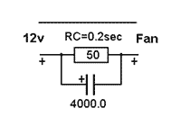
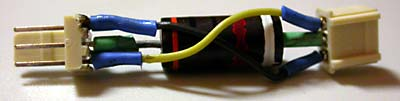
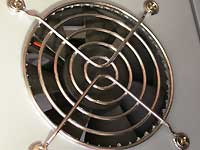

Шумоглушение и охлаждение компьютера
Для уменьшения шума компьютера можно использовать специальные тихие вентиляторы. Есть дорогие компьютеры вообще без вентиляторов, с размещением теплоотводящих радиаторов на внешней поверхности корпуса. Интересно и не так сложно самому сделать свой компьютер тихим. Конечно, когда я занимался снижением шума компьютера, это был настольный компьютер. Многие современные ноутбуки и нетбуки вообще не шумят. Например на даче в качестве сервера я использую Asus-eeePc-901, который имеет беззвучный SSD и такой же беззвучный страховочный вентилятор.
Сейчас ноутбуки подешевели и используются вместо настольных РС. Однако настольные компьютеры удобнее модернизировать. Поэтому у меня их несколько. Я работал в области снижения аэродинамического шума, и могу присоединиться к следующим известным советам. Они расположены в порядке убывания важности.
1. Применяйте радиаторы с большой площадью поверхности и используйте хорошую теплопроводящую пасту для теплового контакта радиатора с чипом.
2. При уменьшении скорости вращения вентилятора вдвое уровень шума можно снизить на 5-15 дб. Для этого можно купить тихоходный вентилятор, или можно добавить резистор в цепь питания вентилятора, контролируя при этом температуру систем.

Если уменьшать скорость при помощи резистора, то есть риск, что со временем, когда требуемый пусковой момент возрастёт из-за увеличения трения, вентилятор вообще не запустится при включении компьютера. На этот случай включите параллельно резистору конденсатор 500-4000 мкф. При включении питания сначала на вентилятор будет подано 12 вольт, а затем напряжение снизится до рабочего (6-8вольт), ограниченного резистором.
3. Вентиляторы должны быть большими. Расход воздуха пропорционален площади и скорости вращения вентилятора. Поэтому при увеличении площади, скорость можно снизить без уменьшения охлаждения. Используйте блок питания с вентилятором, занимающим всю боковую поверхность. Можно купить или сделать переходную прямоугольную трубу для установки большого вентилятора на место маленького.
4. При размещении вентиляторов и отверстий в корпусе нужно добиваться, чтобы вентилятор процессора не гонял воздух по кругу внутри корпуса, а обдувал процессор внешним воздухом. Температура воздуха в комнате на 10-20 градусов ниже, чем внутри компьютера.
Вблизи процессора можно разместить воздуховоды, помогающие подводить холодный воздух к радиатору процессора, и отводить тёплый воздух к вентилятору, выкачивающему воздух из корпуса. Воздуховод можно сделать из тонкого пластика или из картона.
5. На дешёвых вентиляторах подшипник скольжения тише, чем подшипник качения, хотя подшипник качения дольше живёт. Подшипники качения на вентиляторах хороших фирм шумят очень мало благодаря точности изготовления.
6. Наклеивание шумоглушащего материала изнутри на стенки корпуса уменьшает вибрации. Прижмите подозрительную часть корпуса рукой. Если шум уменьшится, то стоит наклеить шумоглушитель. Хороший материал должен быть вязким и тяжёлым. Например, подходит линолеум, или герметик на бумаге, применяемый для снижения шума воздуховодов в зданиях. Однако шумоглушащий материал ухудшает теплоотвод через металлические стенки корпуса.
7. Два вентилятора тише одного при одинаковом охлаждении. При равных условиях два вентилятора прокачивают больше воздуха, если расположены параллельно, а не последовательно.
Компьютер у меня давно, если зачесть программируемые калькуляторы, то с 1976 года. В 1987 году я сделал Специалист по схеме из журнала Моделист - конструктор . Потом был Специалист собственной конструкции на 150 микросхемах. Потом Синклеры и Поиск - советский домашний PC/XT. Эти компьютеры были без вентиляторов.
Мой первый шумный компьютер 386SX 25МГц . Вентилятор у него был только в блоке питания. Потом 486DX 66МГц , потом пентиумы 75, 166, AMD K6-166, Celeron 400 . Вентиляторы останавливались, нужно было периодически их смазывать или менять. При частоте процессора более 200МГц компьютеры стали неприлично шумными. К пентиуму 1.5 ГГц я купил фирменный радиатор с кулером Интел в коробке. Это было ужасно шумно. Изнутри стенок корпуса я наклеил шумопоглощающий материал, подложил пористые прокладки между корпусом и вентилятором, сделал выхлоп из пористой резины, чтобы меньше шума процессорного вентилятора выходило из корпуса. Результат был скромный. Следующий компьютер был специально собран с учётом мер шумоглушения. Теперь при тихом разговоре в комнате компьютер не слышно.
Схема охлаждения компьютера

Комнатный воздух для охлаждения процессора поступает к радиатору процессора по воздуховоду. Важно, чтобы воздуховод не имел утечек, поток воздуха внутри него был достаточно плавным, чтобы выходное сечение было немного меньше, чем площадь радиатора. Вентилятор может быть расположен на входе воздуховода или на радиаторе процессора.
С противоположных сторон материнской платы расположены отсасывающий вентилятор блока питания и нагнетающий вентилятор охлаждения корпуса. Он охлаждает плату и другие устройства, и помогает направить тёплый воздух от процессора сразу к высасывающему вентилятору блока питания. Тёплый воздух от процессора должен сразу откачиваться, и не распространяться к другим устройствам. Чтобы лучше выполнить эту идею желательно разместить блок питания так, чтобы его всасывающий вентилятор был расположен симметрично относительно процессора.

Пластиковый воздуховод
Внешний воздух подводится к процессору через воздуховод из прозрачного пластика, склеенного скотчем. На фото видно, что на радиаторе процессора вентилятора нет. Так делать необязательно. Вентилятор может размещаться в любом месте воздуховода. Для улучшения охлаждения дисков, видеоплаты и памяти установлено несколько направляющих для воздуха. Справа от радиатора видна стенка из прозрачного пластика, которая защищает микросхемы памяти от тёплого воздуха, и направляет этот воздух в сторону блока питания.

Такой переходник иногда продают
в комплекте с вентилятором
Напряжение питания вентиляторов снижено при помощи добавления резистора 30-100 Ом в цепь 12 в. Величины резисторов подобраны для выравнивания шума всех источников при сохранении достаточного охлаждения.

Гладкая сетка вентилятора
Воздух к процессору подаёт вентилятор 92мм, установленный на задней стенке корпуса компьютера. Для увеличения потока воздуха отверстие под этот вентилятор вырезано полностью и на это место установлена гладкая защитная сетка.
В таблице приводится температура процессора (CPU) и платы (MB) при обычной нагрузке (слева) и при максимальной загрузке процессора (справа). Для повышения нагрузки системы использовалась программа Hot CPU Tester Pro 4 и была увеличена частота процессора. Данные относятся к системе Asus A7N8X, Athlon 2000+.
room temperature 20 C

1250MHz low load

1660MHz high load
Слышны только уличные шумы через приоткрытую форточку. Если закрыть окно и прислушаться, то замечаешь компьютер.

Под столом крыса играет с
мышкой
P.S. 2009
С тех пор у меня сменилось несколько компьютеров. Тихие вентиляторы стали доступнее. Сейчас на процессоре установлен тихий Zalman, вентилятор снизу корпуса не используется. Добавлен вентилятор для охлаждения винчестеров. Отверстие в боковой стене корпуса напротив процессора сохранилось, вентилятор блока питания 120мм и расположен рядом с процессором, Как и раньше вентиляторы включены через резисторы, шум почти не слышен, корпус прохладный.
2003-10-26